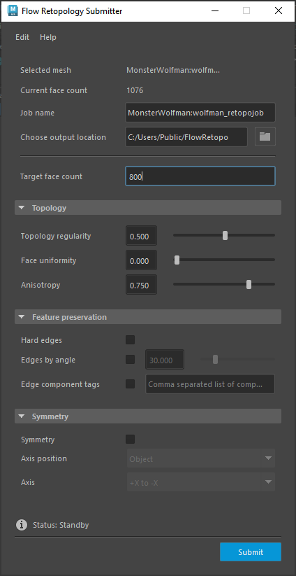
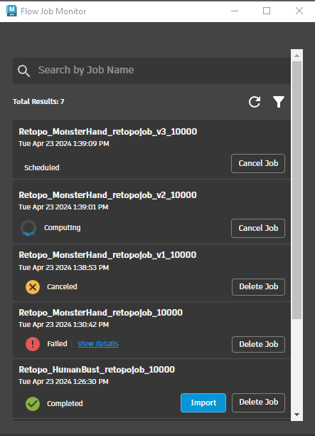
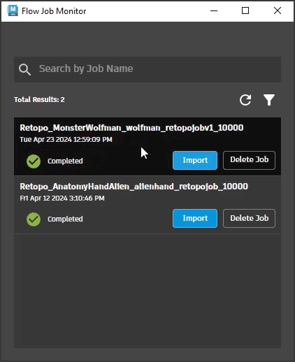

Submit or monitor a Flow Retopology Job
The main interface for Flow Retopology utilizes two key dialogs, the job submitter and the job monitor. Ensure you have the plug-in loaded in the Plug-in Manager to start submitting and monitoring jobs.
Submit a Flow Retopology Job
You can submit multiple retopology jobs to process in the cloud while you work in Maya.
Create a new retopo job
Select Flow Graph Engine tab > Create New Retopo Job. This will open the Flow Retopology Submitter dialog.

Edit the settings for your output in the Flow Retopology Submitter:
Interface Description Edit Choose to Save Settings or Reset Settings in your submitter dialog. This is useful to save your setting preferences. Selected Mesh Displays the mesh as named in the Outliner that is currently selected to perform retopology on. Current face count Displays the face count in your selected mesh before retopology. Job name Choose the name for your job. A viable and unique job name is required for retopology to proceed. This value defaults to your mesh object name. Choose output location Navigate to the directory for your retopology output. A viable location on disk is required to proceed. This value defaults to your current project directory. Target face count Choose the number of faces in your output. This is not a hard count, but more of a target that the algorithm will attempt to hit.Ensure this value is not set below 60 for a viable result. By default, this value is set to 10000. Topology Options Topology Regularity
Set the number of singularities (vertices with other than 4 connected edges) in the result. When set to 0, the result is sensitive to the surface, producing more singularities. When set to 1, fewer singularities are produced and the result may smooth over fine details.
Face Uniformity
Represents the overall size and shape of faces. When set to 0, results in varying sizes, with smaller faces in areas of higher curvature. When set to 1, faces are more uniform in size (irrespective of surface curvature).
Anisotropy
Adaptivity to the directional curvature of a surface. When set to 0, faces stretch less and square up. When set to 1, faces stretch further to adapt to the surface per curvature direction. Note: If uniformity is set to 1, Anisotropy has no effect.Feature Preservation Options Hard Edges
When on, explicit hard edges (those defined using Mesh Display > Harden Edges) on the input mesh are preserved. As a result, features around the hard edges (such as wrinkles, brows, lips, etc) are more accurately converted in the result. Too many hard edges can increase processing time. Turning this option off(default) treats all edges as soft edges.
Edges by angle
When on, edges are preserved based on the specified angle tolerance. If the angle between its adjacent faces exceeds the specified angle tolerance, the edge between the faces is preserved. Use this option when your mesh contains edges that aren't visually hard (ie. on the interior of your mesh) or you don't want to explicitly define hard edges.
Edge component tags
When on, the algorithm searches for the specified edge Component Tags on the input mesh and uses them to influence the resultant mesh. This text box supports comma separated lists of Edge Component Tags. It also supports wildcards in the format<name>.Symmetry Options Symmetry
Enable to create even edge flow on both sides of your mesh.
Axis position
Lets you select the symmetry plane for the selected object. Choose between Object (pivot location and orientation), Bounding Box (invisible cube encompassing selected object) and World (space origin).
Axis
ets you select the axis and direction that symmetry is performed. For example, when +X to -X is selected, topology is cut and filled from the +X axis to the -X axis.Note:Unlike the Maya Retopologize tool, Flow Retopology for Maya will automatically decide to preprocess your mesh if required.
Click Submit. Ensure you are aware of job submission details.
Monitor Flow Retopology Job Progress
Once you have jobs submitted, you can monitor their progress using the Job Monitor window.
Open the Flow Job Monitor
- Select Flow Graph Engine tab > Open Job Monitor or Open Web Monitor (requires autodesk login on web).

| Interface | Description |
|---|---|
| Search by Job Name | Type to find a specific job submission and track its status. |
| Refresh Icon | Refresh all jobs in progress. |
| Filter Icon | Filter your results to find a specfic job. |
| Job Status | Scheduled The job is logged but has not started yet. Computing The job is processing and going through the retopology operation. Canceled You canceled the operation. Failed The job did not complete and your mesh was not retopologized. Completed The job has finished successfuly and is ready to import. |
| Import button | Import the retopologized mesh into your current scene. Note: Your retopologized file will automatically be downloaded to the location specified when the job is completed. |
| Delete Job button | Remove a job from the job monitor list. Note: To manually cleanup data or file(s), navigate to the output location specified for your job. |

Click into a job to view additional details like output location, job log, retopology job details and more.
To see the exact results of your retopology operation in the Viewport once complete, select Display > Heads Up Display >  Poly Count. You can use the heads up display to compare the poly count between your retopology result and initial model in the Viewport.
Poly Count. You can use the heads up display to compare the poly count between your retopology result and initial model in the Viewport.